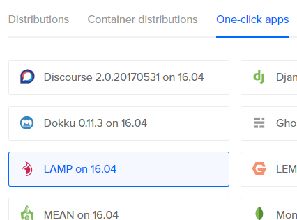
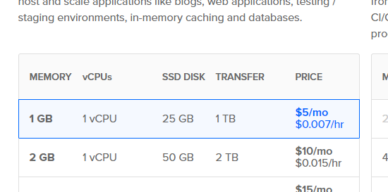
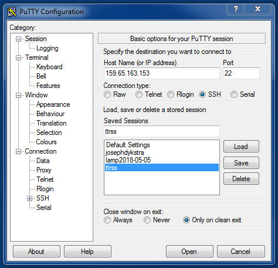
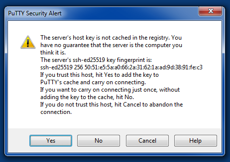
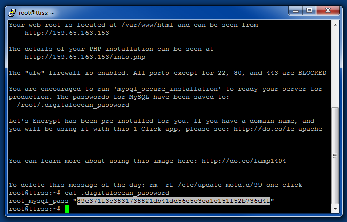
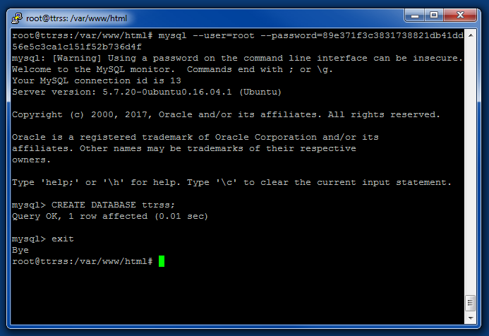
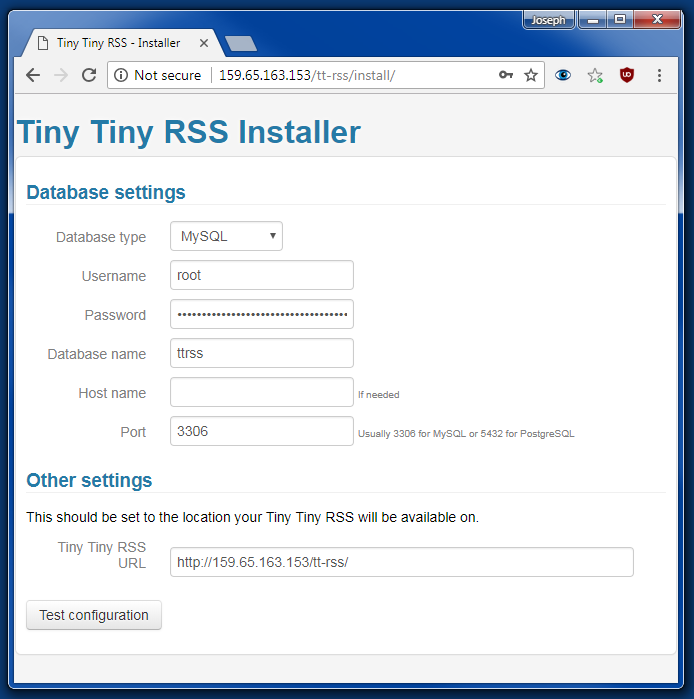
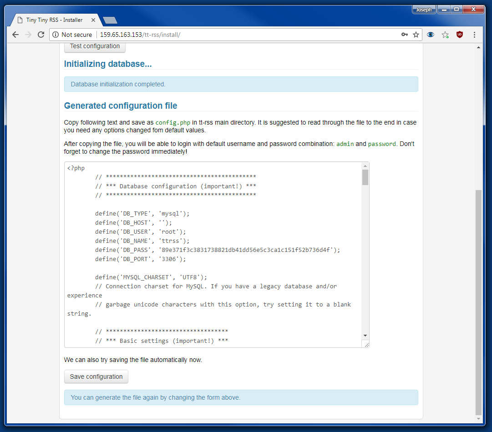
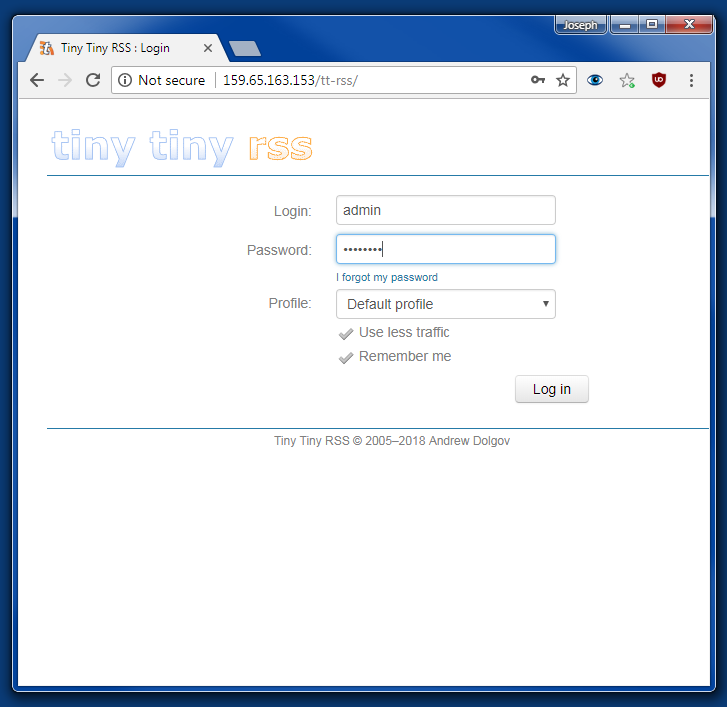

How to set up Tiny Tiny RSS on a Digital Ocean VPS
Setting up Tiny Tiny RSS can be a bit tricky, even if you have some technical knowledge. I ran into a few issues when I set it up, and found solutions which I thought might come in handy for others who try to set up Tiny Tiny RSS.
What you need:
- Digital Ocean account
- SSH Client - I use PuTTY (Windows)
Create the VPS
Log into your Digital Ocean account, and create a new droplet. Choose the One-Click App called LAMP on 16.04.

I chose the cheapest, smallest server.

Hit Create!
Login to the VPS
Open your SSH client, and log into your new VPS. You will need to copy the IP address from the Digital Ocean dashboard. If you did not add any SSH keys, then you will have to wait for the root password in an email. In my experience, this email can come 30 minutes after creating the server.
Login with the VPS's IP and the username root.

On your first login, you might have to accept the key fingerprint.

Install MySQL
Get the MySQL password by running cat .digitalocean_password.
Copy the password. In PuTTY, selecting the text copies it to the clipboard.

Install MySQL by running mysql_secure_installation --use-default. When the password prompt pops up, paste the password. (In PuTTY, just right click to paste. You won't see the screen change.) Then press Enter.
Set Up MySQL
mysql --user=root --password=[Your copied password]
mysql> CREATE DATABASE ttrss;
mysql> exit

Install PHP Plugins
Paste the following commands into the console:
apt-get update
apt-get install php-mbstring -y
apt-get install php-xml -y
apt-get install php-curl -y
service apache2 restart
Install Tiny Tiny RSS
cd /var/www/html
git clone https://tt-rss.org/git/tt-rss.git tt-rss
chmod -R 777 tt-rss
Visit [IP]/tt-rss/install/ in your browser, and fill in the fields:
- Database type is MySQL.
- Username is root.
- Password is the one you copied earlier.
- Database name is whatever you put after the
CREATE DATABASEcommand, in this case ttrss. - Leave Host name empty. (This is the host name for the database server, which defaults to localhost.)
- Port is 3306.
- Tiny Tiny RSS URL should be left as-is.

Press Test configuration. I got a minor warning about internationalized domain names, which I ignored.
Press Initialize database.

Press Save configuration.
Visit [IP]/tt-rss/ in your browser.
- Login is admin.
- Password is password.

Change the password when you log in!